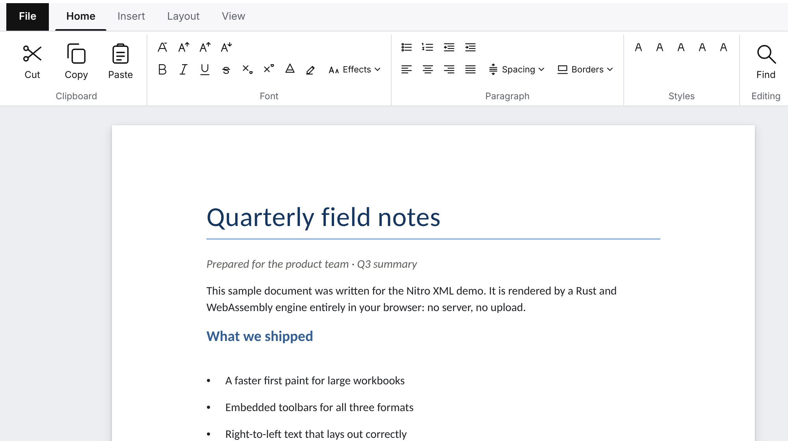
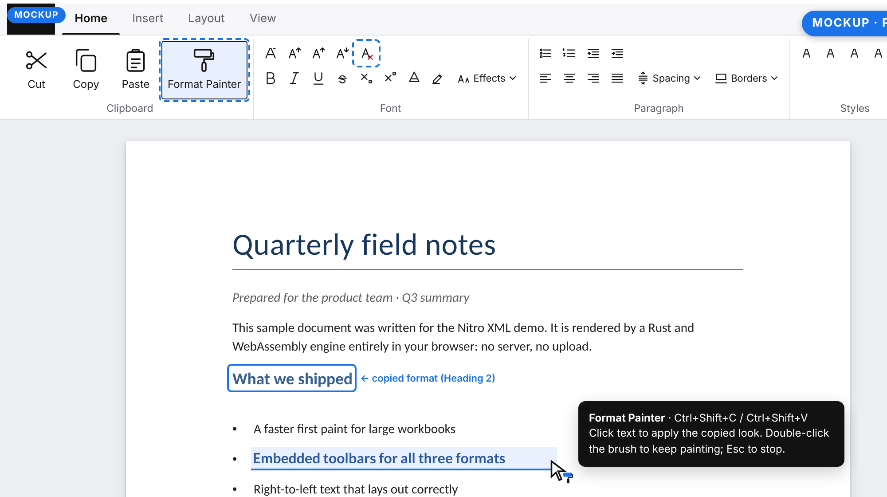
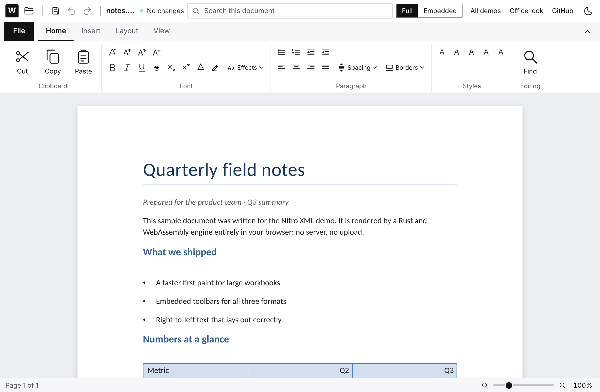
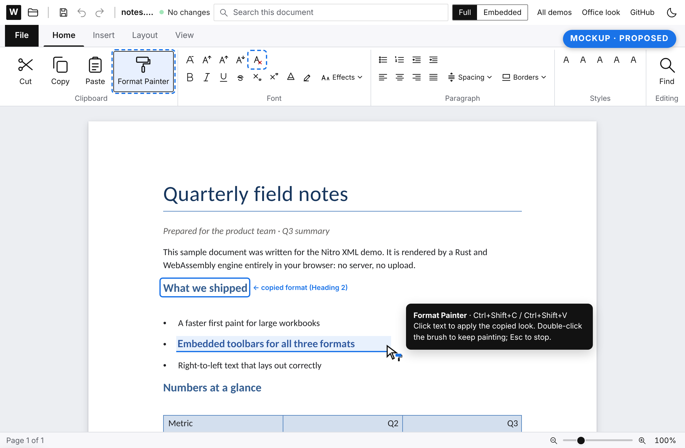

Format Painter and Clear Formatting: copy a look in one click, or wipe it
Approve: tap 👍 on the issue · Decline: tap 👎
Close-up of the change




Full screen


Today: Home > Clipboard has Cut, Copy and Paste only. There is no Format Painter, and Home > Font has no Clear All Formatting button, so matching or resetting a look means redoing each setting by hand.


Mockup: Format Painter in Clipboard (pressed) and Clear All Formatting in Font row 1. The look of “What we shipped” is copied, then painted onto a bullet line with the brush cursor.
Tap an image to open it full size.
Why
Format Painter is one of the most-used buttons in all three Office apps, and Google Docs, Sheets and Slides (paint format), OnlyOffice and Collabora (Clone Formatting) all have it. Today, making one heading, cell or text box look like another means repeating font, size, colour and alignment by hand, and there is no one-click way back to plain text. The command ids (home.format-painter, home.clear-formats) are already registered; this wires them to the selection with one shared implementation across Word, Excel and PowerPoint.
Definition of done
- Home > Clipboard gains Format Painter in all three apps; single click paints once, double click stays on until Esc or a second click; Ctrl+Shift+C / Ctrl+Shift+V copy and paste formatting.
- Word and PowerPoint: copies character formatting (font, size, bold/italic/underline, colour, highlight) and, when the source includes the paragraph mark, paragraph formatting; Excel copies the full cell style (number format, font, fill, borders, alignment) to the painted range.
- Home > Font gains Clear All Formatting (Word/PowerPoint: back to the paragraph style's defaults; Excel: Clear Formats) without adding a ribbon row.
- Each paint or clear is one undo step and survives save; files reopen in Office and LibreOffice without repair.
- Playwright tests cover paint once, sticky paint, Esc, clear, undo and save round-trip in each app; bundle-budget and all required checks green.
Approve: tap 👍 on the issue · Decline: tap 👎